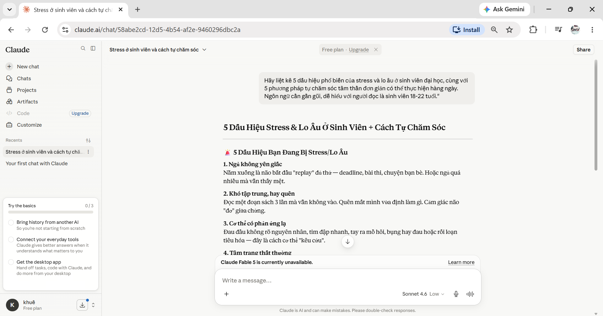
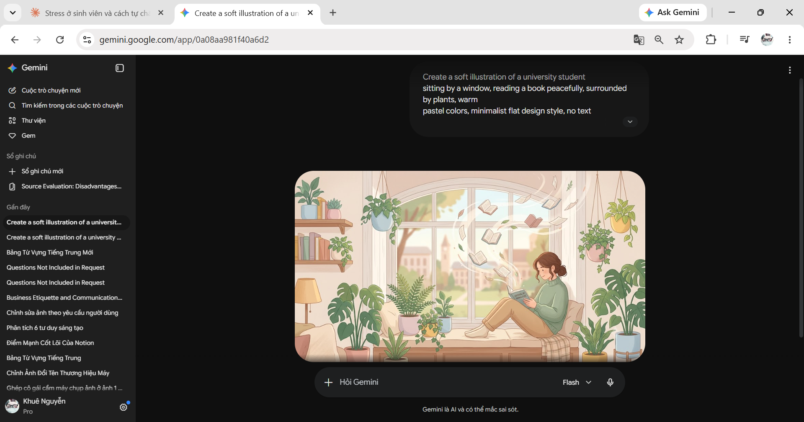
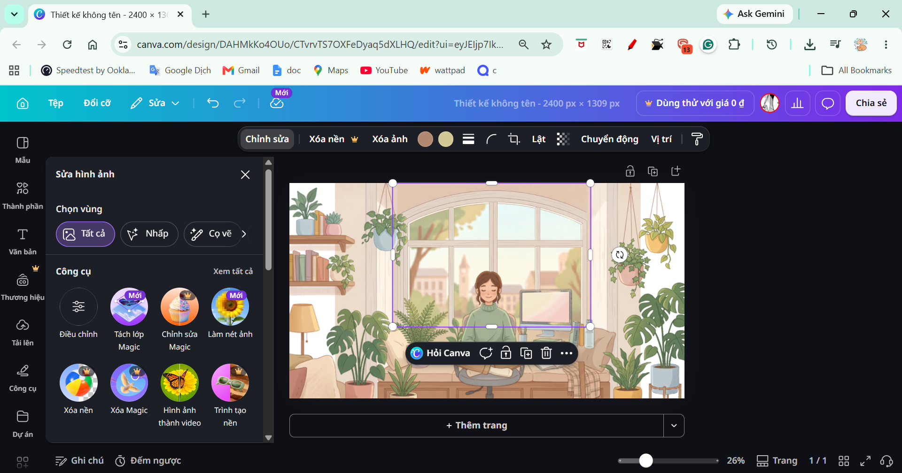
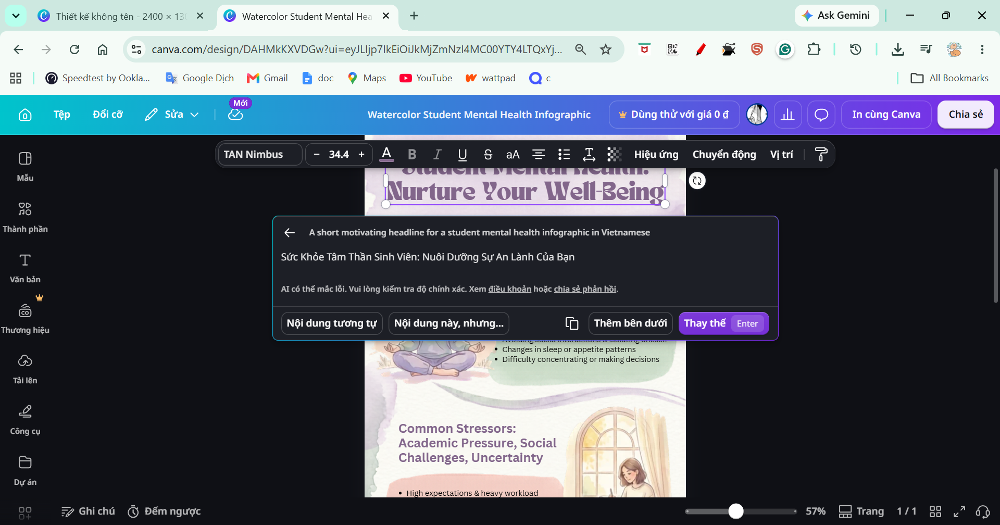
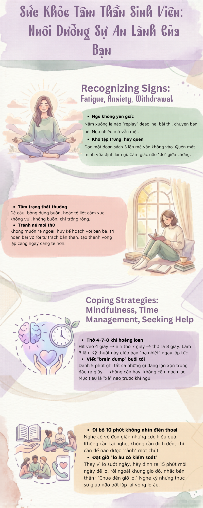

Mục tiêu
Em làm một infographic giúp sinh viên nhận biết dấu hiệu stress, lo âu và một số cách tự chăm sóc đơn giản. Em dùng AI để tạo bản nháp nội dung, hình minh họa và gợi ý bố cục, nhưng tự chọn lọc và chỉnh lại trước khi đưa vào sản phẩm.
Quá trình thực hiện
Soạn nội dung với Claude
Em yêu cầu Claude gợi ý các dấu hiệu thường gặp và cách tự chăm sóc cho nhóm tuổi 18-22. Bản trả lời đầu tiên đủ ý nhưng quá dài với infographic. Em rút mỗi mục còn vài từ khóa, bỏ các câu giải thích lặp và giữ ngôn ngữ gần với cách sinh viên thường nói.

Tạo lại hình khi kết quả chưa hợp lý
Ảnh đầu từ Gemini có những cuốn sách bay quanh nhân vật, trông không tự nhiên. Em sửa prompt, yêu cầu nền sạch và bỏ chi tiết này. Ảnh mới là một sinh viên ngồi thiền tại bàn học với tông xanh dịu, phù hợp hơn với chủ đề.


Dàn trang và kiểm tra bằng mắt
Canva AI gợi ý bốn bố cục, em chọn một bản rồi thay đổi khá nhiều: xóa nền ảnh, crop lại nhân vật, giảm chữ, chỉnh màu và chọn font hiển thị tiếng Việt rõ hơn. Với nội dung sức khỏe tinh thần, em không coi câu trả lời AI là nguồn y khoa. Em đọc lại từng lời khuyên, tránh cách diễn đạt như chẩn đoán và giữ thông điệp ở mức hỗ trợ ban đầu.


Điều em học được
AI giúp em có vật liệu ban đầu nhanh, nhất là khi thử nhiều hướng hình ảnh. Phần tốn thời gian vẫn là quyết định giữ gì, bỏ gì và kiểm tra xem thông tin có phù hợp với người đọc hay không. Chi tiết sách bay là một lỗi nhỏ nhưng nhắc em rằng hình trông đẹp chưa chắc đã đúng; vẫn cần người nhìn và sửa.